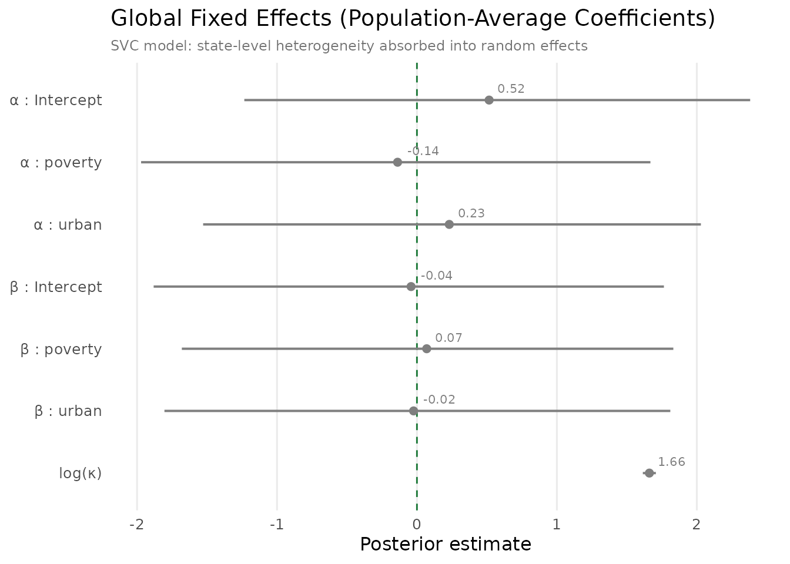
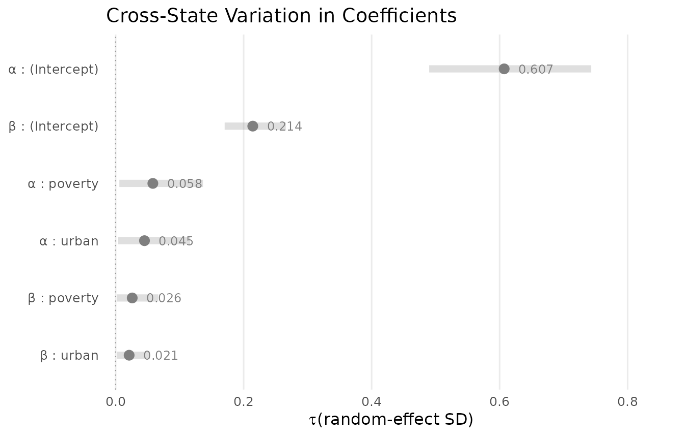
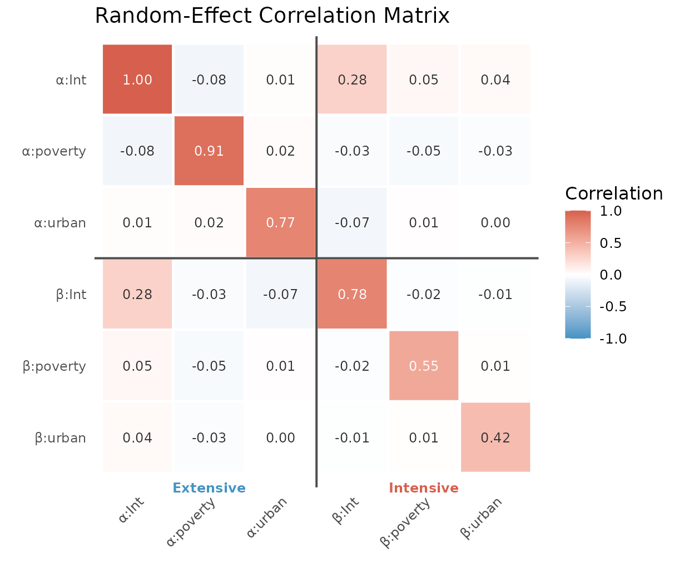
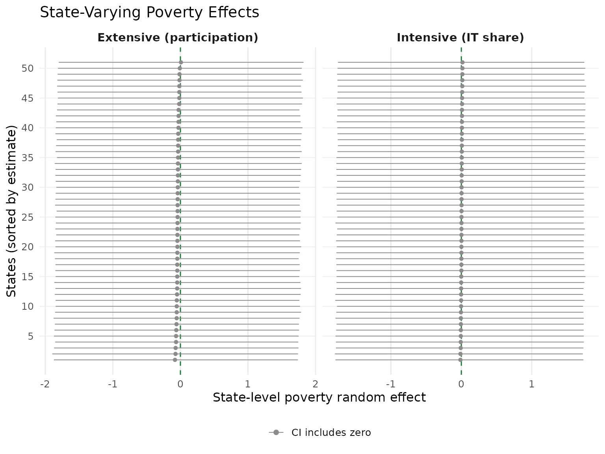
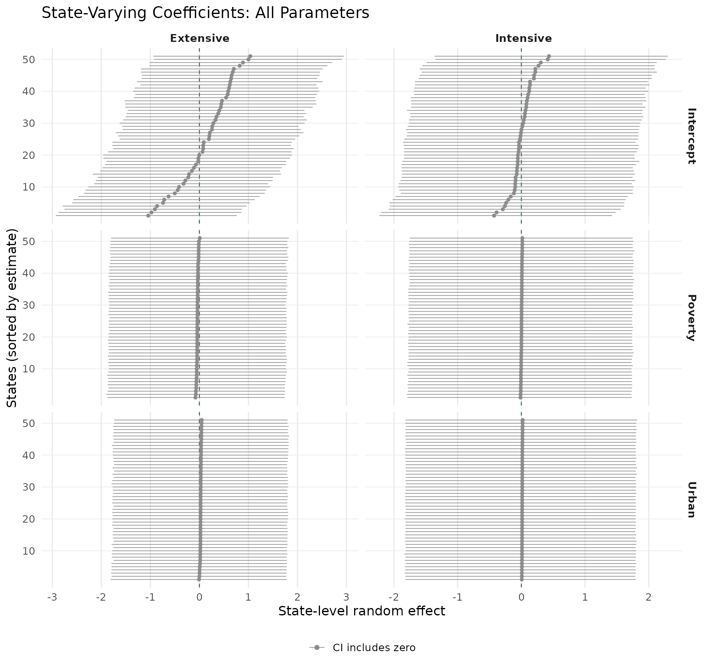
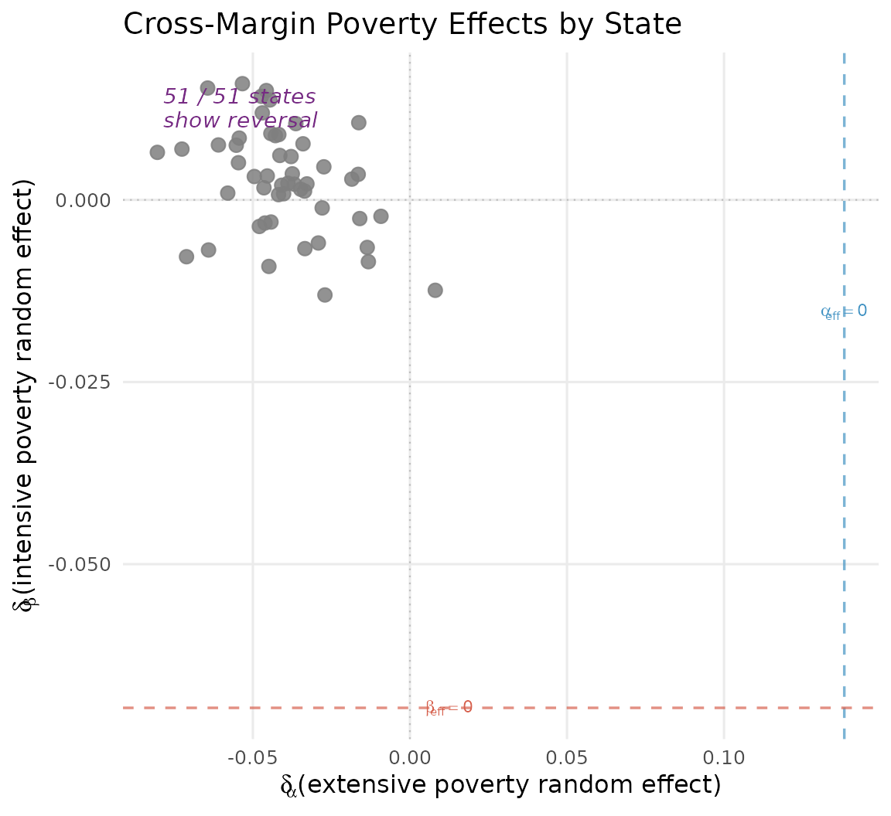
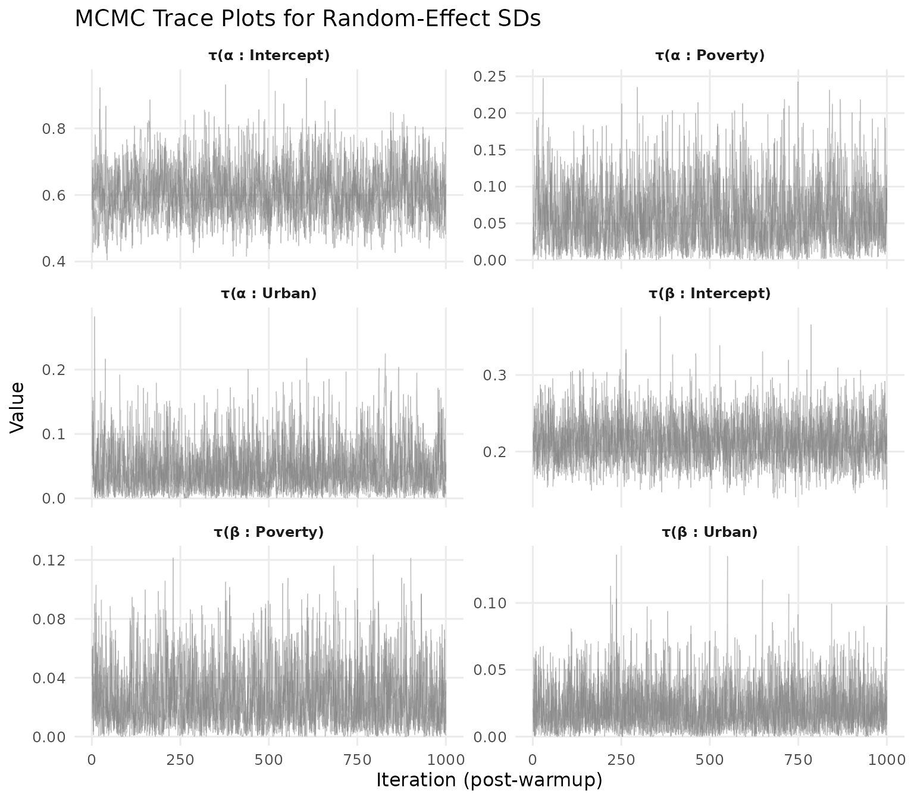

State-Varying Coefficients
JoonHo Lee
2026-02-27
Source:vignettes/03-state-varying-coefficients.Rmd
03-state-varying-coefficients.RmdOverview
The previous vignettes treated the relationship between covariates and IT enrolment as constant across all 51 states. That assumption is convenient but unrealistic. States differ in childcare regulations, subsidy structures, labour markets, and demographics. If these differences are systematic, pooling all states together can mask important heterogeneity — or produce a “national average” that describes no state accurately.
State-varying coefficients (SVC) address this by allowing each state to have its own regression coefficients for both margins. Instead of a single poverty slope, we estimate a global average plus a state-specific deviation. States with more data pull toward local evidence; states with sparse data are partially pooled toward the national mean.
In this vignette you will learn how to:
- Understand the hierarchical model structure behind SVC.
-
Specify an SVC model using random-effects formula
syntax in
hbb(). - Interpret fixed effects alongside variance components.
- Examine random-effect standard deviations ().
- Read the cross-margin correlation matrix.
- Visualise state-level deviations with caterpillar plots.
- Compare the SVC model to the base model via LOO-CV.
We assume familiarity with the basic hbb() workflow from
the Getting Started vignette.
The Hierarchical Structure
The state-varying coefficient model extends the base Hurdle Beta-Binomial by adding state-level random effects to both margins. Let denote the state of provider . The linear predictors become:
Extensive margin (participation):
Intensive margin (enrolment share):
Here and are global fixed effects — the national-average coefficients. The vectors are state-level deviations that shift each state’s coefficients away from the national mean. The effective coefficient for state is:
The random effects follow a multivariate normal distribution:
where is a covariance matrix ( = number of covariates including the intercept). The diagonal of tells us how much each coefficient varies across states. The off-diagonal elements capture correlations, including cross-margin correlations — for instance, whether states where poverty encourages participation are the same states where poverty raises intensity.
To ensure positive-definiteness, the model uses a Cholesky decomposition: , where contains the standard deviations and is a lower-triangular Cholesky factor with an LKJ prior. This is the standard approach in Stan and brms.
The Data
We use the full synthetic NSECE dataset, which has enough observations per state to support random slopes.
data("nsece_synth", package = "hurdlebb")
cat("Sample size:", nrow(nsece_synth), "\n")
#> Sample size: 6785
cat("States: ", length(unique(nsece_synth$state_id)), "\n")
#> States: 51
cat("Obs/state: ", round(nrow(nsece_synth) /
length(unique(nsece_synth$state_id)), 1), "\n")
#> Obs/state: 133
cat("Zero rate: ", round(1 - mean(nsece_synth$z), 3), "\n")
#> Zero rate: 0.354With approximately 133 observations per state on average, there is
adequate information to estimate state-specific intercepts and slopes.
The smaller nsece_synth_small (approximately 500 rows,
roughly 10 per state) is not suitable for SVC models because the random
effects would be dominated by the prior.
Specifying the SVC Model
In hurdlebb, random effects are added to the formula
using the familiar (slopes | group) syntax. To allow both
the intercept and the slope coefficients for poverty and urban to vary
by state:
# This is the code you would run (takes ~45-60 minutes on full data):
fit_svc <- hbb(
y | trials(n_trial) ~ poverty + urban + (poverty + urban | state_id),
data = nsece_synth,
weights = "weight",
stratum = "stratum",
psu = "psu",
chains = 4,
seed = 42
)Several things to note:
-
Random effects. The term
(poverty + urban | state_id)adds random intercepts and random slopes for both covariates, on both margins simultaneously. This produces random effects per state (three for the extensive margin, three for the intensive margin). -
Survey weights. We include
weights,stratum, andpsuas in the survey design vignette. The SVC and survey-weight features compose cleanly: the model uses thehbb_svc_weightedStan variant. - Runtime. The SVC model is substantially more expensive than the base model because it must estimate random effects plus their covariance structure. Expect 45–60 minutes on a modern workstation.
Loading Pre-computed Results
As with previous vignettes, we load saved output:
results <- readRDS(find_extdata("vig03_results.rds"))The print() method gives a compact overview:
cat(paste(results$print_text, collapse = "\n"))
#> Hurdle Beta-Binomial Model Fit
#> ==============================
#>
#> Model type : SVC (state-varying coefficients, unweighted)
#> Stan model : hbb_svc
#> Formula : y | trials(n_trial) ~ poverty + urban + (poverty + urban | state_id)
#>
#> Observations (N) : 6785
#> Covariates (P) : 3 (intercept + 2 predictors)
#> Groups (S) : 51
#> Policy vars (Q) : 1
#> RE dimension (K) : 6
#> Zero rate : 0.354
#> Survey weights : no
#>
#> MCMC:
#> Chains : 4
#> Warmup : 1000
#> Sampling : 1000
#> Total draws : 4000
#> Elapsed : 56.0 minutes
#>
#> Diagnostics:
#> Divergent transitions : 0 [OK]
#> Max treedepth hits : 0 [OK]
#> E-BFMI : 0.788, 0.754, 0.828, 0.775
#> Max Rhat : 1.0128 [WARNING]
#> Min bulk ESS : 290 [LOW]
#> Min tail ESS : 938 [OK]
#>
#> Use summary() for parameter estimates.Model Summary
The summary() method reports posterior means, standard
deviations, and 95% credible intervals for the fixed effects, plus the
variance components:
cat(paste(results$summary_text, collapse = "\n"))
#>
#> ============================================================
#> Hurdle Beta-Binomial Model Summary
#> ============================================================
#>
#> Model type : SVC (state-varying coefficients)
#> Formula : y | trials(n_trial) ~ poverty + urban + (poverty + urban | state_id)
#> Observations : 6785
#> States (S) : 51
#> Zero rate : 35.4%
#> Inference : Posterior (MCMC)
#> Level : 0.95
#>
#> --------------------------------------------------
#> Extensive Margin (alpha)
#> --------------------------------------------------
#> Parameter Estimate SE CI_lower CI_upper Rhat ESS
#> alpha_(Intercept) 0.516 0.905 -1.234 2.381 1.0005 3792
#> alpha_poverty -0.138 0.918 -1.971 1.668 1.0006 4176
#> alpha_urban 0.231 0.893 -1.528 2.029 1.0010 3488
#>
#> --------------------------------------------------
#> Intensive Margin (beta)
#> --------------------------------------------------
#> Parameter Estimate SE CI_lower CI_upper Rhat ESS
#> beta_(Intercept) -0.042 0.914 -1.882 1.765 1.0013 3553
#> beta_poverty 0.070 0.910 -1.680 1.832 1.0000 3438
#> beta_urban -0.024 0.889 -1.804 1.811 1.0000 3833
#>
#> --------------------------------------------------
#> Dispersion
#> --------------------------------------------------
#> kappa = 5.264 (log_kappa = 1.661, SE = 0.024)
#> kappa 95% CI: [5.024, 5.514]
#>
#> --------------------------------------------------
#> Random Effects (tau)
#> --------------------------------------------------
#> tau_alpha_(Intercept) 0.607
#> tau_alpha_poverty 0.058
#> tau_alpha_urban 0.045
#> tau_beta_(Intercept) 0.214
#> tau_beta_poverty 0.026
#> tau_beta_urban 0.021
#>
#> --------------------------------------------------
#> MCMC Diagnostics
#> --------------------------------------------------
#> Divergent transitions : 0 [OK]
#> Max treedepth hits : 0 [OK]
#> E-BFMI : 0.788, 0.754, 0.828, 0.775 [OK]
#> Max Rhat : 1.013 [WARNING]
#> Min ESS (bulk) : 290.1 [LOW]
#> Min ESS (tail) : 937.7 [OK]Reading the fixed-effects table
The fixed effects represent national-average coefficients — the typical relationship between each covariate and IT enrolment across all states.
results$coef_both
#> alpha_(Intercept) alpha_poverty alpha_urban beta_(Intercept)
#> 0.51580819 -0.13829166 0.23108027 -0.04191914
#> beta_poverty beta_urban log_kappa
#> 0.06972552 -0.02393578 1.66091643The poverty reversal persists at the national level:
cat(sprintf("Extensive margin (alpha_poverty): %+.3f\n",
results$coef_both["alpha_poverty"]))
#> Extensive margin (alpha_poverty): -0.138
cat(sprintf("Intensive margin (beta_poverty): %+.3f\n",
results$coef_both["beta_poverty"]))
#> Intensive margin (beta_poverty): +0.070Higher neighbourhood poverty is associated with lower participation probability (negative ) but higher enrolment share among servers (positive ). The key question the SVC model answers is: does this reversal hold uniformly across states, or do some states deviate from the pattern?
Global Fixed Effects Forest Plot
With random effects in the model, the fixed effects represent population-average coefficients. Their credible intervals are wider than in the pooled model because the random effects absorb much of the covariate-outcome variation that previously sharpened the fixed-effect posteriors. The forest plot below makes this visible:
if (requireNamespace("ggplot2", quietly = TRUE)) {
library(ggplot2)
fe <- results$summary_obj$fixed_effects
# Assign margin groups
fe$margin_group <- ifelse(grepl("^alpha", fe$parameter), "Extensive",
ifelse(grepl("^beta", fe$parameter), "Intensive",
"Dispersion"))
fe$margin_group <- factor(fe$margin_group,
levels = c("Extensive", "Intensive", "Dispersion"))
# Clean labels with Greek letters
fe$label <- gsub("alpha_", "\u03b1 : ", fe$parameter)
fe$label <- gsub("beta_", "\u03b2 : ", fe$label)
fe$label <- gsub("\\(Intercept\\)", "Intercept", fe$label)
fe$label <- gsub("log_kappa", "log(\u03ba)", fe$label)
fe$label <- factor(fe$label, levels = rev(fe$label))
ggplot(fe, aes(x = estimate, y = label, colour = margin_group)) +
geom_vline(xintercept = 0, linetype = "dashed",
colour = pal["reference"], linewidth = 0.5) +
geom_pointrange(aes(xmin = ci_lower, xmax = ci_upper),
size = 0.5, linewidth = 0.7, fatten = 2.5) +
# Annotate point estimates
geom_text(aes(label = sprintf("%.2f", estimate)),
hjust = -0.3, vjust = -0.8, size = 2.8,
show.legend = FALSE) +
scale_colour_manual(
values = c(Extensive = pal["extensive"],
Intensive = pal["intensive"],
Dispersion = pal["dispersion"]),
name = "Margin"
) +
labs(x = "Posterior estimate", y = NULL,
title = "Global Fixed Effects (Population-Average Coefficients)",
subtitle = paste("SVC model: state-level heterogeneity",
"absorbed into random effects")) +
theme_minimal(base_size = 12) +
theme(legend.position = "bottom",
panel.grid.minor = element_blank(),
panel.grid.major.y = element_blank(),
plot.subtitle = element_text(size = 9, colour = "grey45"))
}
#> Warning: The `fatten` argument of `geom_pointrange()` is deprecated as of ggplot2 4.0.0.
#> ℹ Please use the `size` aesthetic instead.
#> This warning is displayed once per session.
#> Call `lifecycle::last_lifecycle_warnings()` to see where this warning was
#> generated.
#> Warning: No shared levels found between `names(values)` of the manual scale and the
#> data's colour values.
#> No shared levels found between `names(values)` of the manual scale and the
#> data's colour values.
#> No shared levels found between `names(values)` of the manual scale and the
#> data's colour values.
Global fixed effects (population-average) with 95% credible intervals. Blue = extensive margin, red = intensive margin, purple = dispersion. Wider intervals compared to the pooled model reflect state heterogeneity captured by random effects. The poverty signs persist, confirming the reversal is a robust national phenomenon.
Compared to the pooled model in the Getting Started vignette, the slope intervals are substantially wider because state-level variation is now modelled explicitly. The poverty signs persist (, ), confirming the reversal is a robust population-level phenomenon, not an artefact of ignoring state variation. The log-dispersion remains tightly estimated because it does not receive random effects.
Random-Effect Standard Deviations ()
The parameters measure how much each coefficient varies across states. Larger means more between-state heterogeneity for that coefficient.
tau <- results$tau_table
knitr::kable(
tau[, c("parameter", "margin", "covariate", "estimate", "sd",
"ci_lower", "ci_upper", "rhat", "ess_bulk")],
digits = 3,
align = c("l", "l", "l", rep("r", 6)),
caption = "Random-effect standard deviations by parameter."
)| parameter | margin | covariate | estimate | sd | ci_lower | ci_upper | rhat | ess_bulk |
|---|---|---|---|---|---|---|---|---|
| alpha_(Intercept) | extensive | (Intercept) | 0.607 | 0.076 | 0.490 | 0.743 | 1.001 | 1083.726 |
| alpha_poverty | extensive | poverty | 0.058 | 0.041 | 0.006 | 0.136 | 1.001 | 1450.538 |
| alpha_urban | extensive | urban | 0.045 | 0.036 | 0.004 | 0.116 | 1.003 | 1552.710 |
| beta_(Intercept) | intensive | (Intercept) | 0.214 | 0.029 | 0.170 | 0.266 | 1.001 | 2218.194 |
| beta_poverty | intensive | poverty | 0.026 | 0.021 | 0.002 | 0.067 | 1.000 | 1530.567 |
| beta_urban | intensive | urban | 0.021 | 0.017 | 0.002 | 0.054 | 1.000 | 2452.347 |
if (requireNamespace("ggplot2", quietly = TRUE)) {
library(ggplot2)
tau_df <- results$tau_table
# Create informative labels with Greek letters
tau_df$label <- paste0(
ifelse(tau_df$margin == "extensive", "\u03b1", "\u03b2"),
" : ", tau_df$covariate
)
# Capitalise margin for legend
tau_df$Margin <- ifelse(tau_df$margin == "extensive",
"Extensive", "Intensive")
# Sort by estimate so largest tau appears at top
tau_df <- tau_df[order(tau_df$estimate), ]
tau_df$label <- factor(tau_df$label, levels = tau_df$label)
ggplot(tau_df, aes(x = estimate, y = label, colour = Margin)) +
geom_vline(xintercept = 0, linetype = "dotted", colour = "grey60",
linewidth = 0.4) +
# CI bars as thick translucent background
geom_linerange(aes(xmin = ci_lower, xmax = ci_upper),
linewidth = 2.5, alpha = 0.25) +
# Point estimates
geom_point(size = 3) +
# Numeric labels
geom_text(aes(label = sprintf("%.3f", estimate)),
hjust = -0.4, size = 3.2, show.legend = FALSE) +
scale_colour_manual(
values = c(Extensive = pal["extensive"],
Intensive = pal["intensive"]),
name = "Margin"
) +
scale_x_continuous(expand = expansion(mult = c(0.02, 0.18))) +
labs(x = expression(tau ~ "(random-effect SD)"),
y = NULL,
title = "Cross-State Variation in Coefficients") +
theme_minimal(base_size = 12) +
theme(legend.position = "bottom",
panel.grid.minor = element_blank(),
panel.grid.major.y = element_blank())
}
#> Warning: No shared levels found between `names(values)` of the manual scale and the
#> data's colour values.
#> No shared levels found between `names(values)` of the manual scale and the
#> data's colour values.
#> No shared levels found between `names(values)` of the manual scale and the
#> data's colour values.
#> No shared levels found between `names(values)` of the manual scale and the
#> data's colour values.
Random-effect standard deviations (tau) with 95% credible intervals. The extensive-margin intercept dominates cross-state variation. Slope coefficients vary modestly, suggesting the direction of covariate effects is relatively consistent nationwide. Blue = extensive margin, red = intensive margin.
Several patterns are worth highlighting:
- Intercept heterogeneity is largest. The values for the intercept terms are the largest, meaning that states differ most in their baseline rates of IT participation and IT share. This is intuitive: different states have very different childcare landscapes that cannot be captured by the observed covariates alone.
- Slope heterogeneity is smaller but non-trivial. The poverty and urban slopes also vary across states, suggesting that the same change in neighbourhood poverty has different implications depending on the state. This is the substantive payoff of the SVC model.
- Convergence diagnostics. All values are close to 1.00 and ESS values are adequate for reliable inference.
Cross-Margin Correlation Matrix
The correlation matrix of the random effects reveals how state-level deviations co-vary across parameters and margins. This is one of the most informative aspects of the SVC model.
R_mat <- results$corr_matrix
knitr::kable(
round(R_mat, 2),
caption = "Correlation matrix of state-level random effects."
)| alpha_(Intercept) | alpha_poverty | alpha_urban | beta_(Intercept) | beta_poverty | beta_urban | |
|---|---|---|---|---|---|---|
| alpha_(Intercept) | 1.00 | -0.08 | 0.01 | 0.28 | 0.05 | 0.04 |
| alpha_poverty | -0.08 | 0.91 | 0.02 | -0.03 | -0.05 | -0.03 |
| alpha_urban | 0.01 | 0.02 | 0.77 | -0.07 | 0.01 | 0.00 |
| beta_(Intercept) | 0.28 | -0.03 | -0.07 | 0.78 | -0.02 | -0.01 |
| beta_poverty | 0.05 | -0.05 | 0.01 | -0.02 | 0.55 | 0.01 |
| beta_urban | 0.04 | -0.03 | 0.00 | -0.01 | 0.01 | 0.42 |
if (requireNamespace("ggplot2", quietly = TRUE)) {
library(ggplot2)
R_mat <- results$corr_matrix
param_names <- rownames(R_mat)
n_par <- length(param_names)
# Create short display labels with Greek letters
short_labels <- gsub("alpha_", "\u03b1:", param_names)
short_labels <- gsub("beta_", "\u03b2:", short_labels)
short_labels <- gsub("\\(Intercept\\)", "Int", short_labels)
# Build long-format data
corr_long <- expand.grid(
row = seq_len(n_par),
col = seq_len(n_par)
)
corr_long$value <- as.vector(R_mat)
corr_long$row_name <- factor(short_labels[corr_long$row],
levels = rev(short_labels))
corr_long$col_name <- factor(short_labels[corr_long$col],
levels = short_labels)
# Text colour: white on dark tiles, black on light tiles
corr_long$text_col <- ifelse(abs(corr_long$value) > 0.5,
"white", "grey20")
ggplot(corr_long, aes(x = col_name, y = row_name, fill = value)) +
geom_tile(colour = "white", linewidth = 0.8) +
geom_text(aes(label = sprintf("%.2f", value), colour = text_col),
size = 3.2, show.legend = FALSE) +
scale_fill_gradient2(
low = pal["extensive"],
mid = "white",
high = pal["intensive"],
midpoint = 0,
limits = c(-1, 1),
name = "Correlation"
) +
scale_colour_identity() +
# Block-boundary lines separating extensive and intensive
geom_hline(yintercept = 3.5, colour = "grey30", linewidth = 0.7) +
geom_vline(xintercept = 3.5, colour = "grey30", linewidth = 0.7) +
# Block labels below the axis
annotate("text", x = 2, y = 0.3, label = "Extensive",
size = 3.2, fontface = "bold", colour = pal["extensive"]) +
annotate("text", x = 5, y = 0.3, label = "Intensive",
size = 3.2, fontface = "bold", colour = pal["intensive"]) +
coord_fixed(clip = "off") +
labs(x = NULL, y = NULL,
title = "Random-Effect Correlation Matrix") +
theme_minimal(base_size = 12) +
theme(panel.grid = element_blank(),
axis.text.x = element_text(angle = 45, hjust = 1, size = 9),
axis.text.y = element_text(size = 9),
legend.position = "right",
plot.margin = margin(5, 5, 25, 5))
}
Heatmap of the 6x6 random-effect correlation matrix. Diverging colour scale: blue = negative, white = zero, red = positive. Heavy lines separate the extensive (left/top) and intensive (right/bottom) blocks. The off-diagonal blocks capture the cross-margin dependencies central to this model.
Interpreting cross-margin correlations
The most substantively interesting entries are the cross-margin correlations — the off-diagonal block linking deviations to deviations. A positive correlation between the intercepts means that states with higher participation also show higher intensity. A negative correlation suggests a tradeoff: broader participation comes with lower average intensity. The cross-margin correlation for the poverty slope reveals whether the poverty reversal is amplified or attenuated in certain states.
Caterpillar Plot: Poverty Effects Across States
The poverty coefficient is the substantive centrepiece. The caterpillar plot below ranks states by their poverty random effect and shows 95% credible intervals, with states whose intervals exclude zero highlighted in colour.
if (requireNamespace("ggplot2", quietly = TRUE)) {
library(ggplot2)
re_df <- results$random_effects_df
# Filter to poverty effects
pov_re <- re_df[re_df$covariate == "poverty", ]
pov_re$Margin <- ifelse(pov_re$margin == "extensive",
"Extensive (participation)",
"Intensive (IT share)")
pov_re$Margin <- factor(pov_re$Margin,
levels = c("Extensive (participation)",
"Intensive (IT share)"))
# Sort states within each margin by estimate
pov_re <- do.call(rbind, lapply(split(pov_re, pov_re$Margin), function(df) {
df$rank <- rank(df$estimate, ties.method = "first")
df
}))
# Flag states where CI excludes zero
pov_re$significant <- (pov_re$ci_lower > 0) | (pov_re$ci_upper < 0)
pov_re$sig_label <- ifelse(pov_re$significant,
"CI excludes zero", "CI includes zero")
ggplot(pov_re, aes(x = estimate, y = rank, colour = sig_label)) +
geom_vline(xintercept = 0, linetype = "dashed",
colour = pal["reference"], linewidth = 0.5) +
geom_pointrange(aes(xmin = ci_lower, xmax = ci_upper),
size = 0.25, linewidth = 0.35, fatten = 1.8) +
facet_wrap(~ Margin, scales = "free_x") +
scale_colour_manual(
values = c("CI excludes zero" = pal["intensive"],
"CI includes zero" = "grey55"),
name = NULL
) +
scale_y_continuous(breaks = seq(5, 50, by = 5),
minor_breaks = NULL) +
labs(x = "State-level poverty random effect",
y = "States (sorted by estimate)",
title = "State-Varying Poverty Effects") +
theme_minimal(base_size = 12) +
theme(legend.position = "bottom",
panel.grid.minor = element_blank(),
panel.grid.major.y = element_line(colour = "grey92",
linewidth = 0.3),
strip.text = element_text(face = "bold", size = 11))
}
Caterpillar plots of state-level poverty random effects. Left: extensive margin (participation probability). Right: intensive margin (IT share among servers). States sorted by point estimate within each panel. Red points highlight states whose 95% CI excludes zero.
The caterpillar plots reveal that while most states cluster near zero (the national average), a handful of states deviate noticeably. On the extensive margin, some states show a distinctly more negative poverty effect (poverty is a stronger barrier to IT service), while others are closer to neutral. The intensive margin deviations tend to be smaller, consistent with the lower observed earlier.
Caterpillar Plot: All Covariates
For a comprehensive view, we examine all six random-effect dimensions — intercept, poverty, and urban on both margins — in a single faceted display. This reveals the overall heterogeneity landscape at a glance.
if (requireNamespace("ggplot2", quietly = TRUE)) {
library(ggplot2)
re_df <- results$random_effects_df
# Create readable facet labels
re_df$Margin <- ifelse(re_df$margin == "extensive",
"Extensive", "Intensive")
re_df$Margin <- factor(re_df$Margin, levels = c("Extensive", "Intensive"))
re_df$Covariate <- factor(re_df$covariate,
levels = c("(Intercept)", "poverty", "urban"),
labels = c("Intercept", "Poverty", "Urban"))
# Sort within each panel by estimate
re_df <- do.call(rbind, lapply(
split(re_df, interaction(re_df$Margin, re_df$Covariate, drop = TRUE)),
function(df) {
df$rank <- rank(df$estimate, ties.method = "first")
df
}
))
# Flag significance
re_df$significant <- (re_df$ci_lower > 0) | (re_df$ci_upper < 0)
re_df$sig_label <- ifelse(re_df$significant,
"CI excludes zero", "CI includes zero")
ggplot(re_df, aes(x = estimate, y = rank, colour = sig_label)) +
geom_vline(xintercept = 0, linetype = "dashed",
colour = pal["reference"], linewidth = 0.4) +
geom_pointrange(aes(xmin = ci_lower, xmax = ci_upper),
size = 0.18, linewidth = 0.28, fatten = 1.5) +
facet_grid(Covariate ~ Margin, scales = "free") +
scale_colour_manual(
values = c("CI excludes zero" = pal["intensive"],
"CI includes zero" = "grey55"),
name = NULL
) +
scale_y_continuous(breaks = seq(10, 50, by = 10),
minor_breaks = NULL) +
labs(x = "State-level random effect",
y = "States (sorted by estimate)",
title = "State-Varying Coefficients: All Parameters") +
theme_minimal(base_size = 12) +
theme(legend.position = "bottom",
panel.grid.minor = element_blank(),
panel.grid.major.y = element_line(colour = "grey92",
linewidth = 0.3),
strip.text = element_text(face = "bold", size = 10))
}
Caterpillar plots for all six state-varying coefficients. Rows: covariates (Intercept, Poverty, Urban). Columns: margins (Extensive, Intensive). States sorted by point estimate within each panel. The intercept panels show the widest spread, consistent with the tau estimates. Slope panels show tighter clustering near zero.
The intercept panels show the most dramatic variation, spanning roughly on the extensive margin and on the intensive margin. The slope panels display much tighter spreads. This hierarchy is exactly what the estimates predict: the intercept SDs are an order of magnitude larger than the slope SDs.
Cross-Margin Scatter: Poverty Reversal at the State Level
A key question is whether the poverty reversal — negative on the extensive margin, positive on the intensive margin — is a national-average phenomenon or whether it manifests within individual states. We can examine this by plotting each state’s poverty random effect on the extensive margin against its intensive-margin counterpart. Adding the global fixed effects determines whether each state’s effective coefficient exhibits the reversal pattern.
if (requireNamespace("ggplot2", quietly = TRUE)) {
library(ggplot2)
re_df <- results$random_effects_df
fe <- results$summary_obj$fixed_effects
# Extract poverty random effects for each margin
pov_ext <- re_df[re_df$covariate == "poverty" & re_df$margin == "extensive",
c("state_id", "estimate")]
names(pov_ext)[2] <- "delta_alpha"
pov_int <- re_df[re_df$covariate == "poverty" & re_df$margin == "intensive",
c("state_id", "estimate")]
names(pov_int)[2] <- "delta_beta"
scatter_df <- merge(pov_ext, pov_int, by = "state_id")
# Global fixed effects for poverty
alpha_pov <- fe$estimate[fe$parameter == "alpha_poverty"]
beta_pov <- fe$estimate[fe$parameter == "beta_poverty"]
# Effective state-level coefficients
scatter_df$alpha_eff <- alpha_pov + scatter_df$delta_alpha
scatter_df$beta_eff <- beta_pov + scatter_df$delta_beta
# Reversal: alpha_eff < 0 AND beta_eff > 0
scatter_df$pattern <- ifelse(
scatter_df$alpha_eff < 0 & scatter_df$beta_eff > 0,
"Reversal", "No reversal"
)
n_rev <- sum(scatter_df$pattern == "Reversal")
n_tot <- nrow(scatter_df)
# Axis ranges for annotation placement
x_range <- range(scatter_df$delta_alpha)
y_range <- range(scatter_df$delta_beta)
ggplot(scatter_df, aes(x = delta_alpha, y = delta_beta,
colour = pattern)) +
# Reference axes (zero in random-effect space)
geom_hline(yintercept = 0, linetype = "dotted", colour = "grey75",
linewidth = 0.4) +
geom_vline(xintercept = 0, linetype = "dotted", colour = "grey75",
linewidth = 0.4) +
# Thresholds where effective coefficient = 0
geom_vline(xintercept = -alpha_pov, linetype = "dashed",
colour = pal["extensive"], linewidth = 0.6, alpha = 0.7) +
geom_hline(yintercept = -beta_pov, linetype = "dashed",
colour = pal["intensive"], linewidth = 0.6, alpha = 0.7) +
# Points
geom_point(size = 2.8, alpha = 0.85) +
scale_colour_manual(
values = c("Reversal" = pal["dispersion"],
"No reversal" = "grey50"),
name = NULL
) +
# Count of reversal states
annotate("text",
x = x_range[1] + diff(x_range) * 0.02,
y = y_range[2] - diff(y_range) * 0.02,
label = sprintf("%d / %d states\nshow reversal", n_rev, n_tot),
size = 3.8, fontface = "italic", colour = pal["dispersion"],
lineheight = 0.9, hjust = 0, vjust = 1) +
# Axis threshold labels
annotate("text",
x = -alpha_pov, y = y_range[1] - diff(y_range) * 0.08,
label = expression(alpha[eff] == 0),
size = 3, colour = pal["extensive"]) +
annotate("text",
x = x_range[2] + diff(x_range) * 0.05,
y = -beta_pov,
label = expression(beta[eff] == 0),
size = 3, colour = pal["intensive"]) +
labs(x = expression(delta[alpha] ~ "(extensive poverty random effect)"),
y = expression(delta[beta] ~ "(intensive poverty random effect)"),
title = "Cross-Margin Poverty Effects by State") +
theme_minimal(base_size = 12) +
theme(legend.position = "bottom",
panel.grid.minor = element_blank())
}
#> Warning: No shared levels found between `names(values)` of the manual scale and the
#> data's colour values.
#> No shared levels found between `names(values)` of the manual scale and the
#> data's colour values.
Cross-margin scatter of state-level poverty random effects. Each point is one state. Purple points indicate states whose effective coefficient (global + random) exhibits the full reversal pattern (negative extensive, positive intensive). Coloured dashed lines mark thresholds where the effective coefficient switches sign.
The dashed coloured lines mark the thresholds where the effective state-level coefficient switches sign (i.e., and ). States in the upper-left quadrant relative to these thresholds exhibit the full reversal pattern: poverty reduces the probability of IT service but increases IT intensity among servers.
If most states fall in this quadrant, the poverty reversal is a genuine national phenomenon rather than an artefact of a few outlier states. States outside this quadrant merit substantive investigation — they may have policies that either mitigate the poverty barrier to participation or dampen the poverty–intensity link.
MCMC Diagnostics: Trace Plots for Parameters
The random-effect SDs () are the hardest parameters to estimate because they sit at the top of the hierarchy and are informed by only group-level observations. Sluggish mixing here would undermine the entire random-effect structure. The trace plots below confirm that all four chains explore the same region of parameter space.
if (requireNamespace("ggplot2", quietly = TRUE)) {
library(ggplot2)
draws <- results$draws_df
tau_params <- paste0("tau[", 1:6, "]")
tau_display <- c(
"tau[1]" = "\u03c4(\u03b1 : Intercept)",
"tau[2]" = "\u03c4(\u03b1 : Poverty)",
"tau[3]" = "\u03c4(\u03b1 : Urban)",
"tau[4]" = "\u03c4(\u03b2 : Intercept)",
"tau[5]" = "\u03c4(\u03b2 : Poverty)",
"tau[6]" = "\u03c4(\u03b2 : Urban)"
)
trace_data <- do.call(rbind, lapply(tau_params, function(p) {
data.frame(
iteration = draws$.iteration,
chain = factor(draws$.chain),
value = draws[[p]],
parameter = tau_display[p],
stringsAsFactors = FALSE
)
}))
trace_data$parameter <- factor(trace_data$parameter,
levels = unname(tau_display))
ggplot(trace_data, aes(x = iteration, y = value, colour = chain)) +
geom_line(alpha = 0.45, linewidth = 0.25) +
facet_wrap(~ parameter, scales = "free_y", ncol = 2) +
scale_colour_manual(
values = c("1" = pal["extensive"], "2" = pal["intensive"],
"3" = pal["reference"], "4" = pal["dispersion"]),
name = "Chain"
) +
labs(x = "Iteration (post-warmup)", y = "Value",
title = "MCMC Trace Plots for Random-Effect SDs") +
theme_minimal(base_size = 12) +
theme(legend.position = "bottom",
panel.grid.minor = element_blank(),
strip.text = element_text(face = "bold", size = 9))
}
#> Warning in data.frame(iteration = draws$.iteration, chain =
#> factor(draws$.chain), : row names were found from a short variable and have
#> been discarded
#> Warning in data.frame(iteration = draws$.iteration, chain =
#> factor(draws$.chain), : row names were found from a short variable and have
#> been discarded
#> Warning in data.frame(iteration = draws$.iteration, chain =
#> factor(draws$.chain), : row names were found from a short variable and have
#> been discarded
#> Warning in data.frame(iteration = draws$.iteration, chain =
#> factor(draws$.chain), : row names were found from a short variable and have
#> been discarded
#> Warning in data.frame(iteration = draws$.iteration, chain =
#> factor(draws$.chain), : row names were found from a short variable and have
#> been discarded
#> Warning in data.frame(iteration = draws$.iteration, chain =
#> factor(draws$.chain), : row names were found from a short variable and have
#> been discarded
#> Warning: No shared levels found between `names(values)` of the manual scale and the
#> data's colour values.
#> No shared levels found between `names(values)` of the manual scale and the
#> data's colour values.
MCMC trace plots for all six random-effect standard deviations (tau) across four chains. The extensive-margin intercept tau (top-left) shows the widest dynamic range. All panels display overlapping, stationary traces with no visible trends or stuck chains.
All six trace plots show overlapping, stationary chains. The intercept parameters (top row) sample in a higher range with greater variability, while the slope parameters (middle and bottom rows) concentrate near zero with occasional excursions. The absence of divergent transitions (see the diagnostic summary above) confirms that the sampler navigated the hierarchical posterior geometry successfully.
For a complementary view, the and ESS values in the table provide formal convergence diagnostics. Slightly noisier traces for are expected because these parameters are constrained positive and informed by only state-level data points.
Model Comparison: SVC vs. Base
Does the added complexity of state-varying coefficients improve predictive performance? We compare using PSIS-LOO:
# In a live session:
loo_svc <- loo(fit_svc)
print(loo_svc)
# Compare to base model (from Vignette 01):
# comp <- hbb_loo_compare(base = fit_base, svc = fit_svc)
loo_obj <- readRDS(find_extdata("vig03_loo.rds"))
print(loo_obj)
#>
#> Computed from 4000 by 6785 log-likelihood matrix.
#>
#> Estimate SE
#> elpd_loo -20127.5 136.6
#> p_loo 97.3 1.8
#> looic 40255.0 273.3
#> ------
#> MCSE of elpd_loo is 0.1.
#> MCSE and ESS estimates assume MCMC draws (r_eff in [0.5, 2.0]).
#>
#> All Pareto k estimates are good (k < 0.7).
#> See help('pareto-k-diagnostic') for details.Key quantities to examine:
- ELPD: Higher (less negative) means better out-of-sample prediction. Compare against the base model’s ELPD from the Getting Started vignette.
- p_loo: The effective number of parameters — substantially larger for SVC models, reflecting the 306 state-level random effects.
- Pareto : A few observations with are common in hierarchical models and usually not cause for concern.
Despite the added complexity, the SVC model should show improved or comparable predictive performance because the hierarchical prior penalises extreme state deviations through partial pooling, preventing overfitting.
Complete SVC Workflow
Putting the full pipeline together:
# 1. Load full dataset
data("nsece_synth", package = "hurdlebb")
# 2. Fit SVC model with survey weights
fit_svc <- hbb(
y | trials(n_trial) ~ poverty + urban + (poverty + urban | state_id),
data = nsece_synth,
weights = "weight",
stratum = "stratum",
psu = "psu",
chains = 4,
seed = 42
)
# 3. Posterior summary (inspect fixed effects + tau)
summary(fit_svc)
# 4. Sandwich variance for design-corrected inference
sand <- sandwich_variance(fit_svc)
summary(fit_svc, sandwich = sand)
# 5. LOO cross-validation
loo_svc <- loo(fit_svc)
# 6. Compare to base model
comp <- hbb_loo_compare(base = fit_base, svc = fit_svc)Design Considerations
A few practical points to keep in mind when fitting SVC models:
Sample size
The full nsece_synth dataset (N = 6,785 across 51
states) averages about 133 providers per state, which is adequate. The
smaller nsece_synth_small (N
500) averages only about 10 per state and is not
suitable for SVC models.
Which covariates to let vary?
Not every covariate needs a random slope. If for a particular slope is near zero, keep it as a fixed effect. Start with the covariates of greatest substantive interest (here, poverty) and expand if the data support it.
Computation time
With (intercept + two covariates), the model estimates:
| Component | Count |
|---|---|
| Fixed effects (, , ) | 7 |
| Random-effect SDs () | 6 |
| Cholesky correlation factors | 15 |
| State deviations () | 306 |
| Total parameters | 334 |
Increasing adapt_delta (e.g., to 0.97) and
max_treedepth (e.g., to 14) may be necessary if the sampler
reports divergent transitions.
Key Takeaways
The SVC model reveals substantial cross-state heterogeneity. Intercept values dominate, meaning states differ most in their baseline propensity to serve IT children.
Slope values are smaller but non-negligible. The poverty and urban effects are relatively consistent across states, but not perfectly so.
Cross-margin correlations are modest. The positive intercept cross-correlation suggests coherent “IT-friendly” state profiles; slope cross-correlations are near zero.
The poverty reversal is robust. The sign pattern persists in the global fixed effects, and the majority of states exhibit the reversal when combining the global coefficient with their state-specific deviation.
MCMC convergence is adequate. No divergent transitions, all close to 1, and trace plots show well-mixed chains.
What’s Next?
This vignette introduced state-varying coefficients to capture between-state heterogeneity. The remaining vignettes extend the framework further:
| Vignette | What you will learn |
|---|---|
| Policy Moderators | Cross-level interactions: explaining why states differ using policy variables (CCDF market rates, tiered reimbursement, IT add-ons) |
| Marginal Effects | Average marginal effect decomposition across both margins, the poverty reversal probability, and design-corrected inference |